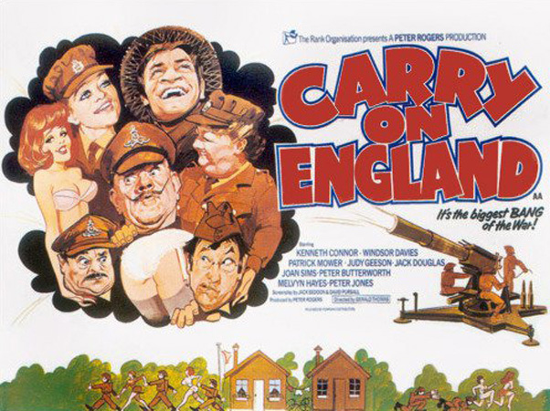

Peter Rogers
Captain S Melly (Kenneth Connor) is put in charge of an experimental mixed-battery during the darkest days of the Second World War. It is a relief for Captain Bull (David Lodge) to greet his relief but Melly is not prepared for the ball-squeezing Sergeant Major "Tiger" Bloomer (Windsor Davies) and the randy antics of Bombardier Ready (Jack Douglas), Sergeant Tilly Willing (Judy Geeson) and Sergeant Len Able (Patrick Mower).
Forever feigning illness or hiding in their underground "snoggery", the troops are happily getting to grips with each other rather than the enemy. Most prominent of the females is Private Alice Easy (Diane Langton) who tries to charm her new commanding officer but only succeeds in propelling her top button into his system!
Private Jennifer Ffoukes-Sharpe (Joan Sims) pines for "Tiger" while everybody – including little Gunner Shorthouse (Melvyn Hayes) – gets a piece of the action. Even after a tip-off to the medical officer, Major Butcher (Julian Holloway) segregation and rigorous training, the unit is still a shower. However, an inspection by the cowardly Brigadier (Peter Jones) and Major Carstairs (Peter Butterworth) is interrupted by an airborne attack and Melly's troops finally prove they are real British bulldogs.
Filming dates: 3 May - 4 June 1976.
(Note that Sid James - star of 19 previous entries in the series - died just days before filming on 26 April 1976)
Interiors: Pinewood Studios, Buckinghamshire.
Exteriors: (1) Pinewood Studios. The orchard was utilised once again as it was for the camping and caravan sites in Carry On Camping and Carry On Behind. (2) Black Park, Iver Heath, Buckinghamshire).
This film featured few established members of the Carry On team. Carry On regular Kenneth Connor played a leading role, but the only other long-time regulars present, Joan Sims and Peter Butterworth, had only small roles. Windsor Davies, who had joined the series with a main role in the preceding film Carry On Behind, again plays a major role, reprising (in all but name) his Sergeant-Major character from the BBC sitcom It Ain't Half Hot Mum, along with Melvyn Hayes as his effeminate foil.
Other main roles are played by established and recognisable actors Judy Geeson and Patrick Mower, both newcomers to the Carry On films.
The role of the Brigadier was offered to Kenneth Williams, who was unable to accept due to stage commitments.
The film includes some shots of British and German aircraft taken from the film 'The Battle of Britain'.
The film was originally certified AA by the then British Board of Film Censors which would have restricted audiences to those aged fourteen and over, but was cut down to the non-age limited A certificate by heavily toning down the scenes featuring topless nudity and removing one comic use of the word "fokker". However it still proved to be a major commercial failure and was withdrawn from some cinemas after just three days. This was the first major flop since Carry On At Your Convenience five years earlier and only made its costs up thanks to television and video sales.